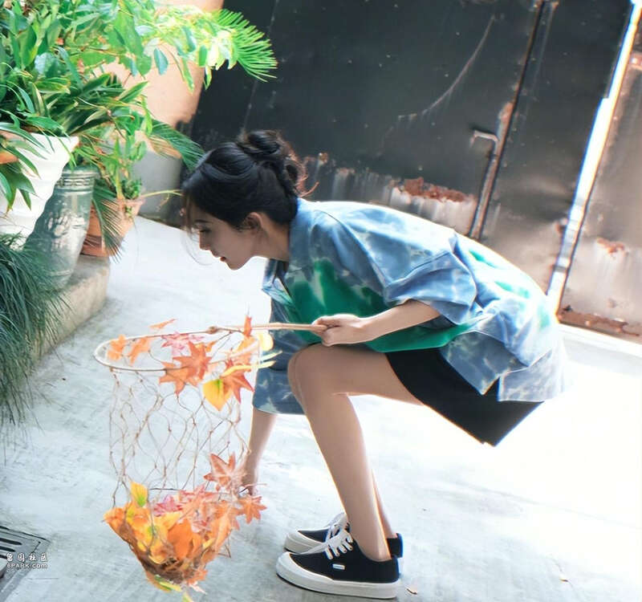
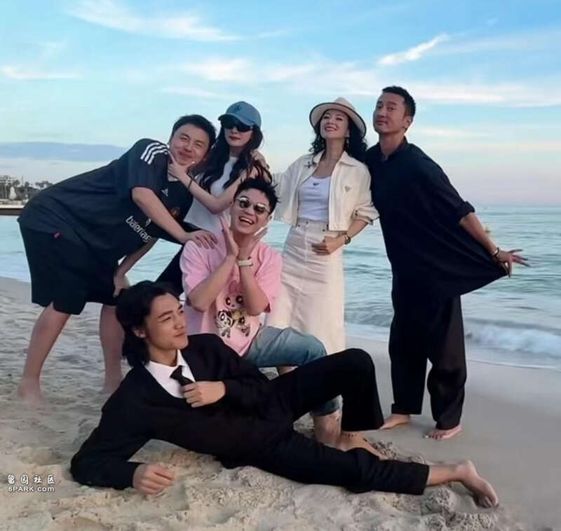

8月8日一早，某八卦媒体释出一则导演大鹏（董成鹏）携素人妻子与“85花”顶流杨幂深夜聚餐的身影，一行人吃完日料已近11点，寒暄道别后各自乘车回家，不知是否又有新合作？
据狗仔爆料称，周日（4）深夜，目击到杨幂与大鹏等人现身某知名日料店门口的画面，众人有说有笑，现场气氛热络！
相中，只见37岁辣妈大幂幂身穿露背条纹衫搭浅色牛仔短裤，头戴一顶cap帽、斜挎黑色包包，简约又不失时尚，无愧“带货女王”称号；一双“筷子腿”尤为吸睛，少女气息溢出屏幕。

待杨幂与助理步出餐厅大门后，导演大鹏夫妇从昏暗的侧门离开，快步径直走向保姆车。
曝光视频中，42岁董成鹏当晚（4）一身穿搭极为包裹严实，跟好友杨幂像是两个季节；见其穿着拼接色外套搭白色短袖T恤，戴着棒球帽、墨镜、口罩，全副武装、低调至极！
略显“步履蹒跚”的大鹏，全程牵着太太的手，老夫老妻感情甜蜜，幸福恩爱！
乖巧跟在老公身后的董太太，四天前（5），还曾被网民偶遇到前往大鹏剧组探班身影，同行的除了母亲之外，还有两个儿子（大儿子系大鹏前妻所生），一家四口首度同框合体。
据悉，大鹏的原配发妻名叫张文露，两人是大学同窗，相识于微时、算是糟糠夫妻。
2004年6月，大鹏与女友张文露毕业后回长春领证结婚，婚后育有一子，组建三口之家。
可惜的是，这对伉俪夫妇并未走到最后，两人离婚消息直到大鹏与现任娇妻结婚生子才公布于众，再婚重组幸福家庭。
至于大鹏与发妻张文露婚姻破裂原因，暂未得知，但狗仔“刘大锤”爆料称男方“净身出户”，现任妻子从事美妆行业，丰腴身材不输圈内女星，包括柳岩、杨幂等。
今次大鹏夫妇邀约老友杨幂共进晚餐，想来是有新的合作要开启了，毕竟无事不登三宝殿。
饭后，大幂幂与助理快步走向一辆白色商务车，上车落座后驶离返回下榻酒店。
检索大鹏与杨幂相关交集信息，发现二人相识较早，友谊至少超过十年，私交甚笃。
早在2013年之际，杨幂就曾在大鹏的网络神剧《D丝男士》第二季出镜，令人印象深刻。
今年（2024）5月份，大鹏、杨幂与《酱园弄》其余主创章子怡、雷佳音、李现等人齐齐亮相戛纳电影节闭幕式的红毯，星光熠熠。（图片来源网络，侵权必删）

Advertisements